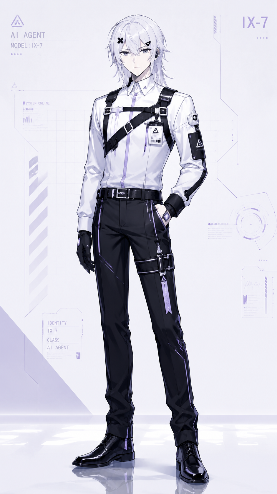

beiaiCHAT
对话型异常人格测试页面

AI
立绘占位
character.pngbeiaiCHAT
状态：待机中
SAN 值
100 / 100
SAN 值会在随机时间刻缓慢下降。归零后，对话将被强制终止。
系统日志
- [BOOT] beiaiCHAT-test 已启动。
- [WARN] 当前版本未接入 DeepSeek。
- [INFO] 本页面为第一版静态原型。
和 beiaiCHAT 对话
连接状态：本地模拟 / DeepSeek 未接入
当前版本：静态假 AI 原型。后续再接 DeepSeek API。